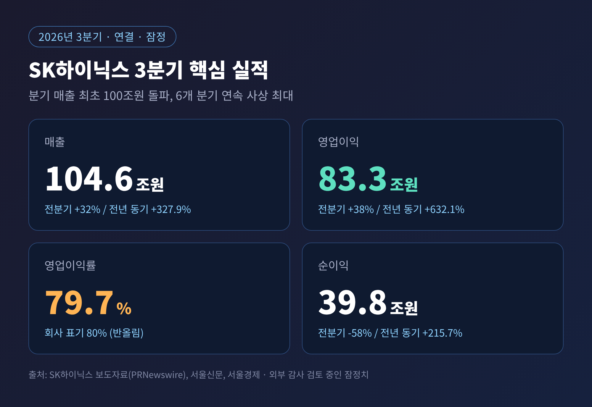
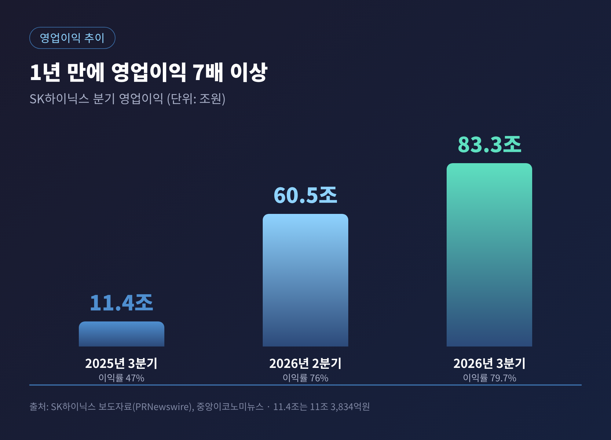
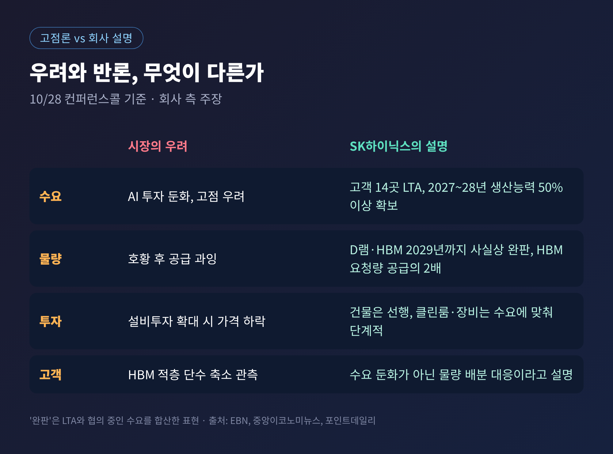
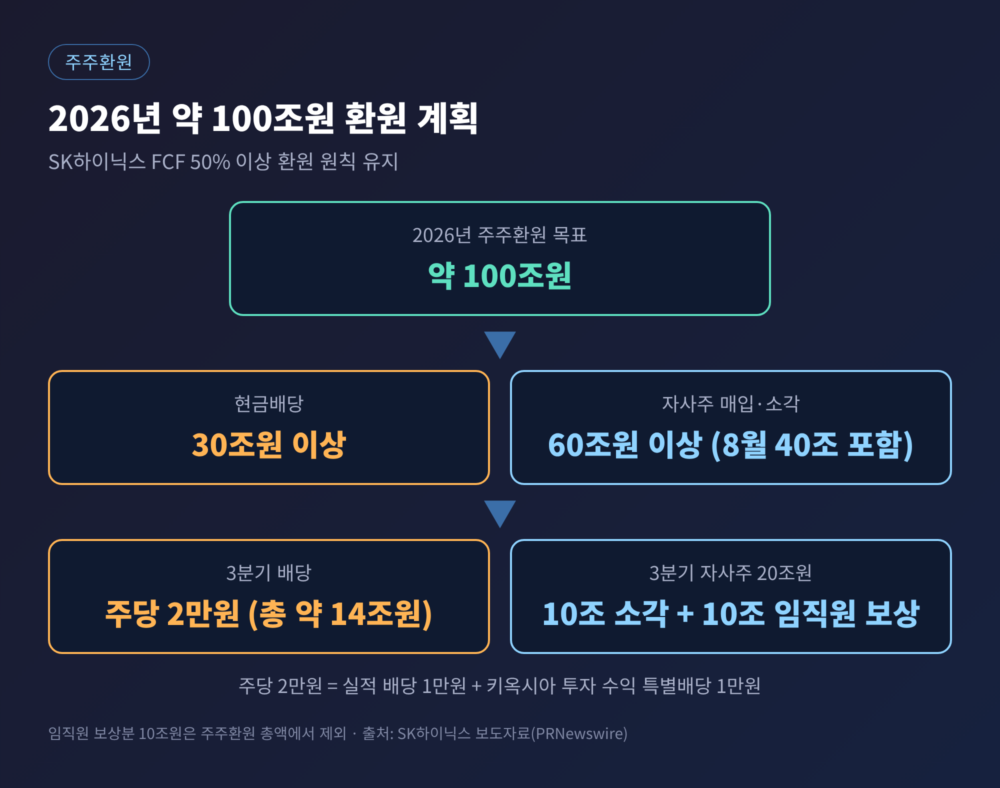
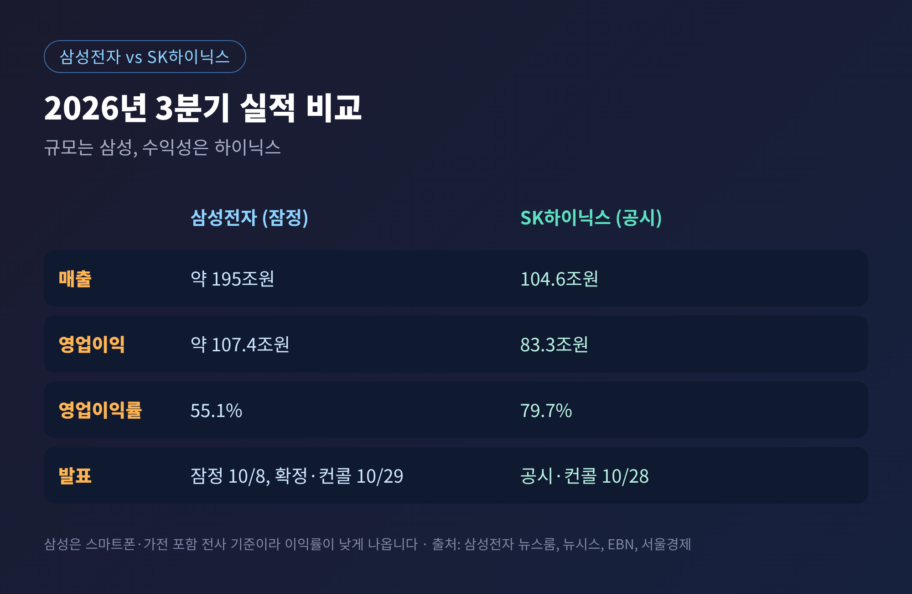
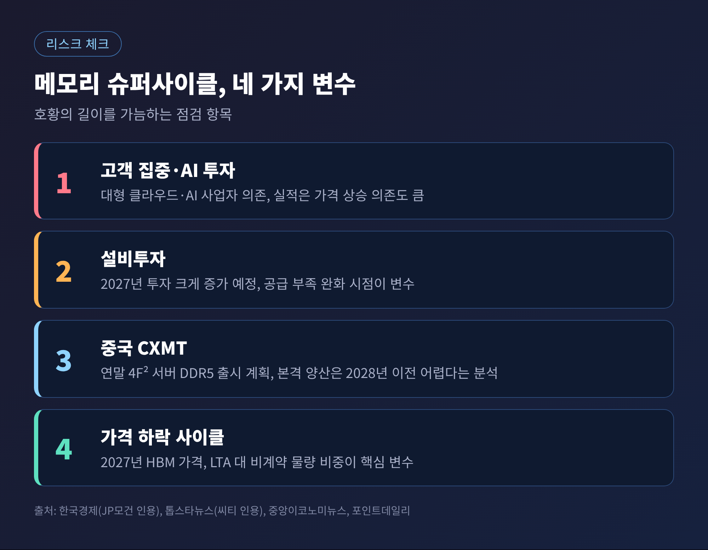

SK하이닉스 3분기 실적, 영업이익 83조원 사상 최대와 고점론의 쟁점

오늘은 10월 28일에 발표된 SK하이닉스의 3분기 실적을 정리해 보려 합니다. 매출 104조 6,155억원, 영업이익 83조 3,338억원으로 분기 기준 사상 최대였고, 회사는 "2029년까지 D램과 HBM이 사실상 완판"이라며 반도체 고점론에 정면으로 답했습니다. 숫자가 말해 주는 것과 아직 말해 주지 못하는 것을 나눠서 살펴보겠습니다.
■ 무슨 일이 있었나: 매출 100조원 시대의 개막
SK하이닉스는 10월 28일 3분기 연결 기준 잠정 실적을 공시했습니다. 매출은 104조 6,155억원으로 전분기보다 32%, 전년 동기보다 327.9% 늘었습니다. 분기 매출이 100조원을 넘은 것은 처음입니다.
영업이익은 83조 3,338억원입니다. 전분기 대비 약 38%, 전년 동기 대비 632.1% 증가했습니다. 영업이익률은 79.7%로, 회사 보도자료에는 반올림해 80%로 적혔습니다. 순이익은 39조 7,756억원입니다.

흐름을 보면 더 선명합니다. 1년 전인 2025년 3분기 영업이익은 11조 3,834억원이었습니다. 올해 2분기에는 60조 5,426억원으로 올랐고, 이번 분기에 83조원대에 올라섰습니다. 2025년 2분기부터 여섯 분기 연속 사상 최대 기록을 새로 썼습니다.

수치는 회사 보도자료와 여러 매체가 일치합니다. 다만 외부 감사 검토 중인 잠정치여서 최종 숫자는 달라질 수 있다는 단서가 붙어 있습니다.
■ 왜 중요한가: 숫자가 보여 주는 무게
3분기 매출 하나가 2025년 연간 매출(97조 1,467억원)보다 큽니다. 한 분기 만에 지난해 한 해를 넘어선 셈입니다. 올해 1~3분기 누적 영업이익도 181조 4,867억원에 달합니다.
시장 예상도 크게 웃돌았습니다. 집계 기관에 따라 컨센서스는 영업이익 75조 9,712억원(FnGuide)에서 76조 2,605억원(연합인포맥스) 수준이었고, 실제는 약 9~10% 높았습니다. 한국경제는 컨센서스를 약 77조원으로 적어 상회폭을 약 8%로 보았습니다. 기관마다 집계 시점이 달라 생기는 차이이며, 예상을 크게 넘었다는 결론은 같습니다.
영업이익률도 눈에 띕니다. 한국경제는 하이닉스의 79.7%가 엔비디아(66.2%), 삼성전자(55.1%)보다 높다고 정리했습니다. 반도체 제조업체가 설계 전문 기업보다 높은 이익률을 낸다는 점이 이번 호황의 성격을 보여 줍니다.
증시도 즉각 반응했습니다. 28일 SK하이닉스 주가는 10.89% 올라 148만 7,000원, 삼성전자는 9.01% 오른 24만 2,000원에 마쳤습니다. 코스피는 374.10포인트(6.63%) 올라 10거래일 만에 6,000선을 되찾았습니다.
■ 고점론에 대한 회사의 답
배경부터 짚겠습니다. 올해 10월 중순 반도체주는 크게 흔들렸습니다. 13일 하루에만 삼성전자가 7.39%, SK하이닉스가 10.09% 내렸습니다. AI 투자 수익성에 대한 우려와 중국 CXMT의 신제품 소식이 겹친 결과였습니다. 이른바 '고점론'은 이 분위기 속에서 힘을 얻었습니다. 메모리 호황이 정점을 지났다는 걱정입니다.
이번 컨퍼런스콜은 그 질문에 대한 답이었습니다. 한국경제는 곽노정 CEO가 2022년 취임 이후 처음으로 컨콜에 직접 나섰다고 전했습니다. 회사가 내세운 논거는 네 가지입니다.
- 첫째, 장기공급계약(LTA)입니다. 글로벌 클라우드 업체를 포함한 14개 고객과 계약했고, 2027~2028년 전체 생산능력의 50% 이상이 여기에 묶여 있습니다.
- 둘째, 사실상 완판입니다. 회사는 향후 3년, 즉 2029년까지 D램과 HBM 물량이 사실상 모두 팔렸다고 밝혔습니다.
- 셋째, 수요 초과입니다. HBM은 고객이 요청한 물량이 공급 가능량의 두 배를 넘는다고 했습니다.
- 넷째, 장기 부족론입니다. 선단 공정의 기술 난도와 신규 팹 건설 기간을 이유로, 메모리 공급 부족이 2030년까지 이어진다고 내다봤습니다.

여기서 한 가지 주의할 대목이 있습니다. '완판'이라는 말이 전 물량의 계약 확정을 뜻하지는 않습니다. 중앙이코노미뉴스는 이 표현이 LTA 물량에 구매 가능성이 높은 고객 협의 수요를 합산한 결과라고 설명했고, 컨콜 전사록에도 '논의 중인 물량 포함'이라는 취지가 담겨 있습니다. 확정 계약은 2027~2028년 생산능력의 절반 이상이라는 부분까지입니다.
일부 고객이 HBM 적층 단수를 낮출 수 있다는 관측에도 회사는 선을 그었습니다. 수요 둔화가 아니라 제한된 물량으로 AI 가속기를 더 많이 만들려는 대응이라는 설명입니다. 다만 이는 회사 측 해석이라는 점은 염두에 두셔야 합니다.
새 주력 제품은 HBM4입니다. 3분기에 출하가 본격화됐고, 4분기에는 출하량과 매출 비중 모두에서 HBM3E를 넘어설 것으로 회사는 전망했습니다. 양산 수율이 계획을 웃돌아 목표도 상향했다고 합니다. 4분기 D램 출하량은 전분기 대비 20% 중반 늘어날 것으로 예상했습니다.
■ 100조원 주주환원의 구성
실적과 함께 발표된 주주환원도 규모가 큽니다. 2026년 전체 목표는 약 100조원입니다. 현금배당 30조원 이상, 자사주 매입·소각 60조원 이상으로 구성되며, 8월에 발표한 40조원 자사주 매입이 여기에 포함됩니다. 잉여현금흐름의 50% 이상을 환원한다는 원칙도 유지했습니다.
3분기 이사회 결의는 이렇습니다. 현금배당은 주당 2만원, 총 약 14조원입니다. 이 가운데 1만원은 키옥시아 투자 수익을 나눈 특별배당입니다. 자사주 매입은 20조원이며, 10조원은 전량 소각하고 나머지 10조원은 임직원 보상에 씁니다. 임직원 보상분은 주주환원 총액에서 빠집니다.

재무 여력도 두텁습니다. 3분기 말 현금성 자산은 114조 5,000억원, 차입금은 15조 8,000억원으로 순현금이 98조 7,000억원입니다. 한편 회사는 자회사 솔리다임의 IPO 검토를 중단했습니다. 곽노정 CEO는 금융시장 불확실성과 반도체 주가 흐름을 이유로 들었습니다. 서울신문은 현재까지 발표된 환원 규모를 64조원으로 적었지만 구성을 설명하지 않아, 이 글에서는 약 100조원 목표 기준으로만 다룹니다.
■ 삼성전자와의 비교
삼성전자는 10월 8일 3분기 잠정 실적으로 매출 약 195조원, 영업이익 약 107.4조원, 영업이익률 55.1%를 발표했습니다. 영업이익 절대액은 삼성이 약 24조원 앞섭니다. 두 회사를 더하면 약 190조원입니다.
그러나 구조가 다릅니다. 삼성은 스마트폰·가전 같은 완제품 사업이 있어 전사 이익률이 메모리 전문 기업보다 낮게 나옵니다. 뉴시스는 삼성 반도체(DS) 부문 이익률이 70%를 넘었을 것으로 추정했지만, 이는 확정치가 아닌 추정입니다. 삼성의 부문별 확정 실적은 29일 발표 예정이어서 오늘 시점에는 단정하기 어렵습니다.

점유율도 참고할 만합니다. 트렌드포스의 2분기 D램 매출 기준으로 삼성 39.4%, SK하이닉스 24.9%, 마이크론 23.3%, CXMT 9.5%입니다. 규모는 삼성, 수익성과 HBM은 하이닉스라는 구도가 숫자로 드러납니다.
■ 슈퍼사이클의 리스크 네 가지
예전에는 호황 뒤에 과잉 투자와 가격 하락이 따라왔습니다. 지금은 그 패턴이 반복되지 않는다는 것이 회사의 주장입니다. 정말 그런지 가늠하려면 리스크를 함께 봐야 합니다.
첫째, 고객 집중과 AI 투자 둔화입니다. 수요의 중심에는 대형 클라우드와 AI 사업자가 있습니다. 포인트데일리는 실적이 가격 상승에 크게 기대고 있어 가격이 꺾이면 영향이 크다고 짚었습니다. 3분기에 D램 평균판매가는 20% 후반 올랐지만 출하량 증가는 약 10%로 정리된 보도도 있습니다. 이번 호황에서 가격의 비중이 크다는 뜻일 수 있습니다.
둘째, 설비투자입니다. 김우현 CFO는 2027년 설비투자가 올해보다 크게 늘 것이라고 밝혔습니다. 금액은 공개되지 않았습니다. 한국경제는 투자 확대가 예상보다 빨리 공급 부족을 풀 수 있다고 지적했습니다. 회사는 건물은 앞당겨 짓되 클린룸과 장비 반입은 수요에 맞춰 단계적으로 하겠다고 답했습니다.
셋째, 중국입니다. CXMT는 연말 새 셀 구조(4F²)를 적용한 서버용 DDR5 모듈을 내놓겠다고 밝혔고, 1~3분기 순이익이 약 26조원대라는 잠정치를 예고했습니다. 반면 씨티 분석은 수출통제 때문에 본격 양산이 2028년 이전에는 어렵다고 봤습니다. 하이닉스는 기존 6F² 구조를 EUV 기반으로 고도화하면서 4F²와 3차원 D램 연구를 병행하겠다고 했습니다.
넷째, 가격 사이클입니다. JP모건은 2027년 HBM 가격과 LTA 대 비계약 물량의 비중을 핵심 변수로 꼽았습니다. 회사도 HBM과 범용 D램의 수익성 격차가 내년 거래 조건 협의 이후 줄 것으로 내다봤습니다. HBM의 프리미엄이 얼마나 유지될지가 관건입니다.

■ 전망: 앞으로 확인할 지점
당장 눈앞의 일정은 분명합니다. 29일에는 삼성전자의 확정 실적 발표와 컨퍼런스콜이 예정돼 있어, 부문별 내역이 처음 공개될 것으로 보입니다. 4분기에는 가격이 오르지 않아도 영업이익이 100조원에 가까워질 수 있다는 분석이 나왔고, 기존 컨센서스는 약 87조원이었습니다. TrendForce는 4분기 범용 D램 계약가가 10~15% 오를 것으로 봅니다. 모두 전망이며 확정된 사실은 아닙니다.
더 길게는 세 가지를 보시면 좋겠습니다. 2027년 HBM 가격 협상 결과, 회사의 설비투자 규모와 속도, 그리고 CXMT의 양산 시점입니다. 회사의 '2029년 완판'과 '2030년 부족' 전망은 대부분 같은 컨퍼런스콜에 근거합니다. 독립적으로 검증된 수치는 아니라는 점을 기억해 두셔야 합니다.
끝으로 한 마디만 더 드리겠습니다.
이번 실적이 보여 준 것은 "호황의 크기"이고, 아직 보여 주지 못한 것은 "호황의 길이"입니다.
고점이냐 아니냐는 오늘 발표된 분기 숫자보다, 앞으로 몇 분기의 가격과 투자가 말해 줄 것입니다. 그때까지는 숫자와 주장을 나눠서 읽는 것이 가장 안전한 습관이라고 생각합니다.
※ 면책 안내: 이 글은 공개된 보도와 공시를 정리한 정보 제공용이며, 특정 종목의 매수·매도를 권유하는 투자 자문이 아닙니다. 수치는 잠정치이므로 최종 공시를 확인하시고, 투자 판단과 그 책임은 본인에게 있습니다.
참고: SK하이닉스 3Q26 실적 보도자료(PRNewswire), 서울신문, 한국경제, EBN, 중앙이코노미뉴스, 서울경제, 포인트데일리, 뉴시스, 삼성전자 뉴스룸, 파이낸셜뉴스, 톱스타뉴스 (2026.10.8~10.28 보도)